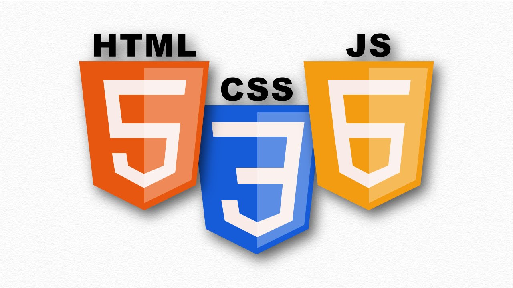
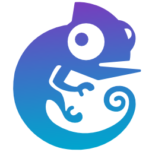
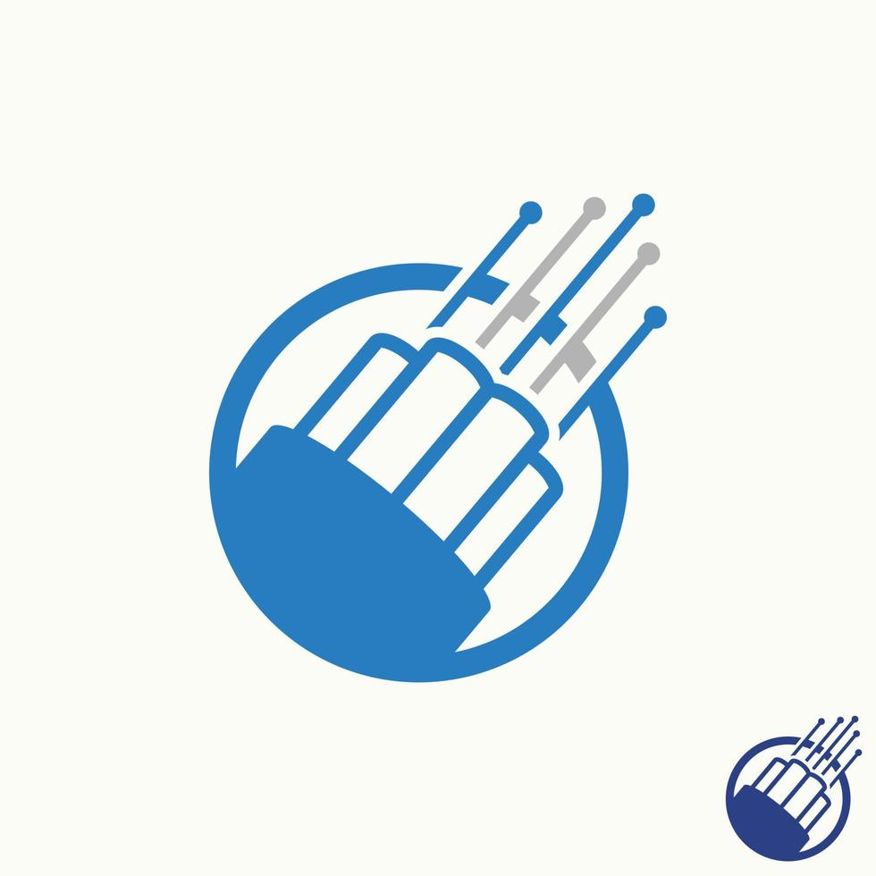

Python
Scripts d’automatisation, manipulation de données et outils réseau.
Voir SAE
Étudiante en BUT Réseaux & Télécommunications à Sophia Antipolis, passionnée par les réseaux, systèmes et la cybersécurité.
Actuellement à la recherche d’un stage en réseaux/systèmes pour mettre en pratique mes compétences et découvrir le fonctionnement d’une entreprise.
Je m’appelle Cécile et je suis passionnée par les réseaux et la technologie. En parallèle, je suis animatrice diplômée BAFA et j’ai travaillé tous les étés et certaines vacances scolaires dans des centres de loisirs. J’ai un réel attachement pour les enfants, que j’accompagne dans leur quotidien et leurs activités, en mettant l’accent sur l’écoute, la sécurité et le développement personnel.
Pendant mon BUT R&T, j’ai consolidé mes compétences en conception et administration de réseaux, télécommunications, systèmes et cybersécurité. J’aime comprendre les besoins, proposer des solutions techniques claires et documentées, et voir un projet fonctionner de bout en bout.
Langues : 🇬🇧 Anglais (B1+) • 🇪🇸 Espagnol (B1)
Scripts d’automatisation, manipulation de données et outils réseau.
Voir SAE
Programmation bas niveau, gestion mémoire et logique algorithmique.
Voir SAE
Programmation orientée objet et développement d’applications.
Voir SAE
Développement web dynamique avec formulaires et logique serveur.
Voir SAE
Bases de données, requêtes SQL et intégration applicative.
Voir SAE
Création de sites web modernes, responsive et interactifs.
Voir SAE
Administration système, shell, gestion des services.
Voir SAE
Configuration système et gestion des utilisateurs.
Voir SAE
VLAN, routage, ASA, NAT, DMZ et architectures réseau.
Voir SAE
Simulation et test de réseaux complexes.
Voir SAEProgrammation IoT et communication longue portée.
Voir SAESimulation de systèmes et traitement du signal.
Voir SAETraitement et streaming audio/vidéo.
Voir SAE
FTTH, architecture opérateur, mesures optiques.
Voir SAEEncadrement et animation de groupes d’enfants durant la vie quotidienne ainsi qu’en temps d’activités. Accompagnement au développement de l’enfant.
Encadrement et animation d’enfants dans un centre de loisirs, participation à l’organisation et aux activités quotidiennes.
Service client et encaissement, mise en place, réassort et rangement d’un stand lors de matchs sportifs ou festivals.
Découverte et mise en œuvre d’un premier réseau informatique en dehors des TP, pour appréhender la diversité des constituants de ce réseaux et compreniez leurs interactions.
comprendre une liaison physique sur câble coaxial. Elle consiste à étudier le câble, analyser le signal transmis, réaliser des mesures simples et présenter les résultats. L’objectif est de découvrir concrètement le fonctionnement d’une transmission et d’apprendre à interpréter les données mesurées.
Étudier l’e-réputation : mieux connaître les risques et les moyens d’action pour défendre votre image en ligne. Préparer une intervention visant à sensibiliser des collégiens ou des lycéens sur le thème de l’e-réputation.
Conception d’un LAN complet : VLAN, routage, services de base, documentation et tests. Livrables : schéma, configuration, rapport.
Chaîne d’acquisition, mesures fréquentielles/temporelles, interprétation et rapport. Livrables : mesures, rapport.
Mettre en place un système qui prenne des photos du banc avant chaque exécution de test ou sur demande. Livrables : plan, scripts, rapport final.